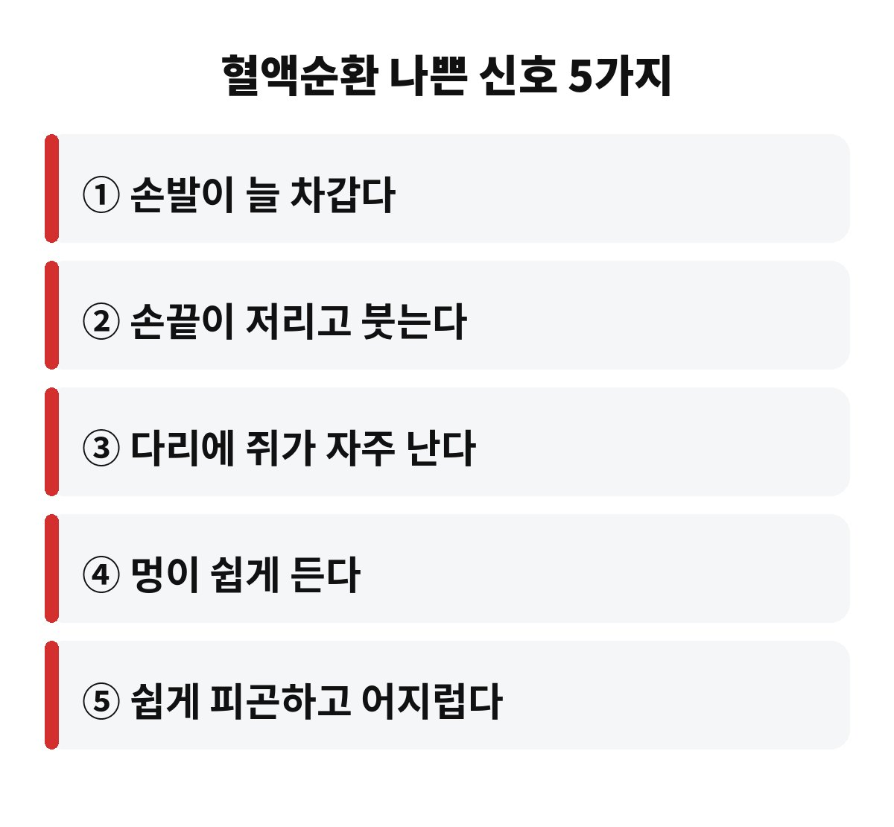
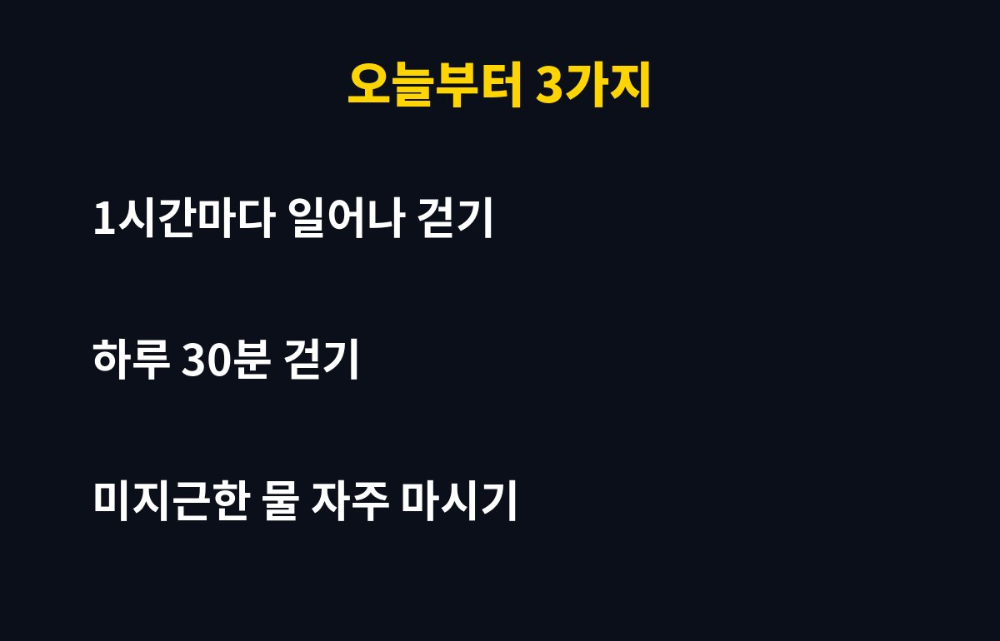

혈액순환 나쁜 신호는 크게 5가지로, 손발이 차갑고 저리거나 다리에 쥐가 잦고 멍이 쉽게 드는 것이 대표적입니다. 요즘처럼 아침저녁 기온이 뚝 떨어질 때 손발이 시린 40·50대라면, 이 신호를 그냥 "나이 탓"으로 넘겨도 되는지 궁금하시죠?
날씨가 추워지면 우리 몸은 체온을 지키려고 손발 끝의 혈관을 좁힙니다. 그래서 겨울이 오면 혈액순환 문제가 훨씬 눈에 띄게 되거든요. 오늘은 내 몸이 보내는 신호와 오늘부터 할 수 있는 습관을 쉽게 정리해 볼게요.
첫째, 손발이 유난히 차갑습니다. 다른 사람은 괜찮은데 나만 양말을 겹쳐 신는다면 한 번 의심해 볼 만해요. 둘째, 손끝·발끝이 저리거나 붓습니다. 아침에 반지가 꽉 낀다면 이 신호일 수 있죠.
셋째, 다리에 쥐가 자주 납니다. 넷째, 부딪힌 기억이 없는데 멍이 쉽게 듭니다. 다섯째, 별일 안 했는데 피곤하고 어지럽습니다. 하나만 있다고 큰일은 아니지만, 두세 개가 겹친다면 생활습관을 점검해 볼 때입니다.

몸은 추위를 느끼면 열이 빠져나가지 않도록 말초 혈관을 수축시킵니다. 혈관이 좁아지면 피가 흐르는 길이 좁아지니 손발 끝까지 따뜻한 피가 덜 가죠. 여기에 겨울에는 활동량이 줄고 물도 덜 마시게 돼서, 피가 더 끈적하게 느껴질 수 있어요.
그래서 겨울 건강 관리의 첫걸음이 바로 혈액순환 개선이라고들 말합니다. 특히 오래 앉아 있는 직장인이라면 더 신경 써야 하고요.
거창한 건 필요 없어요. 아래 세 가지만 기억하세요.
| 습관 | 실천 팁 |
| 자주 움직이기 | 1시간마다 일어나 2~3분 걷기, 발목 돌리기 |
| 꾸준한 걷기 | 하루 30분 정도 가볍게, 무리하지 않고 |
| 수분과 보온 | 미지근한 물 자주 마시기, 손목·발목·목 따뜻하게 |

특히 앉아서 일할 때 다리를 꼬는 습관은 피하는 게 좋아요. 다리를 꼬면 허벅지와 종아리 쪽 혈류가 눌려서 오히려 순환을 방해할 수 있습니다.
손발이 차가운 정도를 넘어 색이 창백하거나 푸르게 변하고, 한쪽 다리만 붓거나 통증이 심하다면 단순한 추위 탓이 아닐 수 있습니다. 걷다가 다리가 아파서 자꾸 쉬어야 하는 경우도 마찬가지예요. 이럴 땐 참지 말고 전문의에게 확인받는 게 안전합니다.
또 당뇨·고혈압·고지혈증이 있거나 흡연을 한다면 혈관 건강에 더 신경 써야 해요. 생활습관만으로 해결하려 하지 말고 정기검진을 꼭 챙기세요.
혹시 요즘 손발이 시리다는 생각, 해보신 적 있으신가요? 댓글로 나만의 겨울나기 습관도 알려주세요. 도움이 되셨다면 구독해 두시면 다음 건강 정보도 놓치지 않습니다.
※ 이 글은 일반적인 건강 정보로, 진단·치료를 대신하지 않습니다. 증상이 있다면 반드시 전문의와 상담하세요.